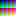

I wanted to make automagical 8-bit portraits from pictures, so I made this plugin to take images on a page and replace them with a div box full of smaller div boxes representing each pixel. With an image made of HTML, you can use CSS to manipulate some or all of the "pixels." Wow.
Here's a 16 x 16 pixel image, a palette of all 8-bit colors. Cool.
It's tiny, because each color is one pixel. I'm going to call the pixelDiv plugin to make this all html and CSS.
$('img.small-example').pixelDiv({
hideIMG : true, // sets whether to hide the original image after generating pixelDiv; default: true
pixelSize : 1, // sets the pixel width and height of the pixelDiv "pixels"; default: 1
divID : $(this).attr('id'), // sets an ID to the pixelDiv; default: none
divClass : 'example-div' // sets a class to the pixelDiv; default: just "pixelDiv"
});
The following is a div box filled with div boxes for each pixel:
Don't believe me? View the source, juggalo.
It's not as fun when you set the pixelSize to be 1, so let's set it to be 25:
$('img.large-example').pixelDiv({
pixelSize : 25, // the width and height of each "pixel" will be 25px
});
Cool, much better.
You can take a photo and make it into an instant 8-bit'ish/pixel portrait.
You can use JavaScript and CSS to manipulate some or all of the pixelDiv pixels. Like making the pixels round with border-radius:
The more pixels, the longer it will take to process! I originally did this all with PHP and, being server-side, it's so much faster. But this is a jQuery plugin. I don't know, just use small images and not a ton of them on the same page. Use your gahdamn brain is all I'm saying.
Use a clearfix hack on each pixelDiv because the pixels are floating left in the pixelDiv (try using CSS to float right for mirror fun!). If I did inline-block display instead of float, I was getting spaces between each row when the pixels were less than 5px. I'll revisit that later, when my heartburn goes away maybe.